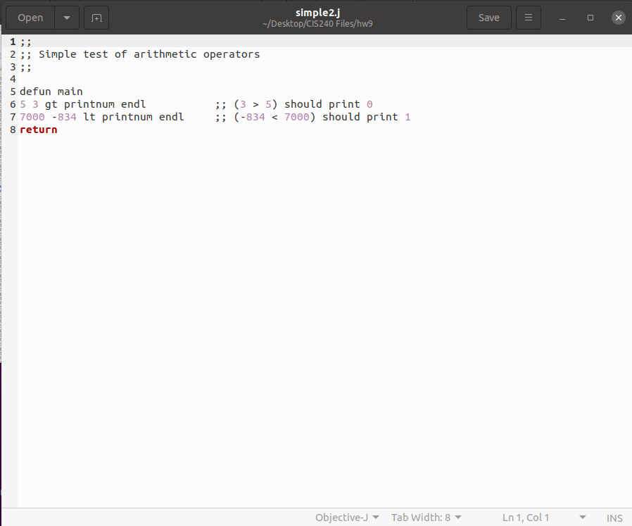
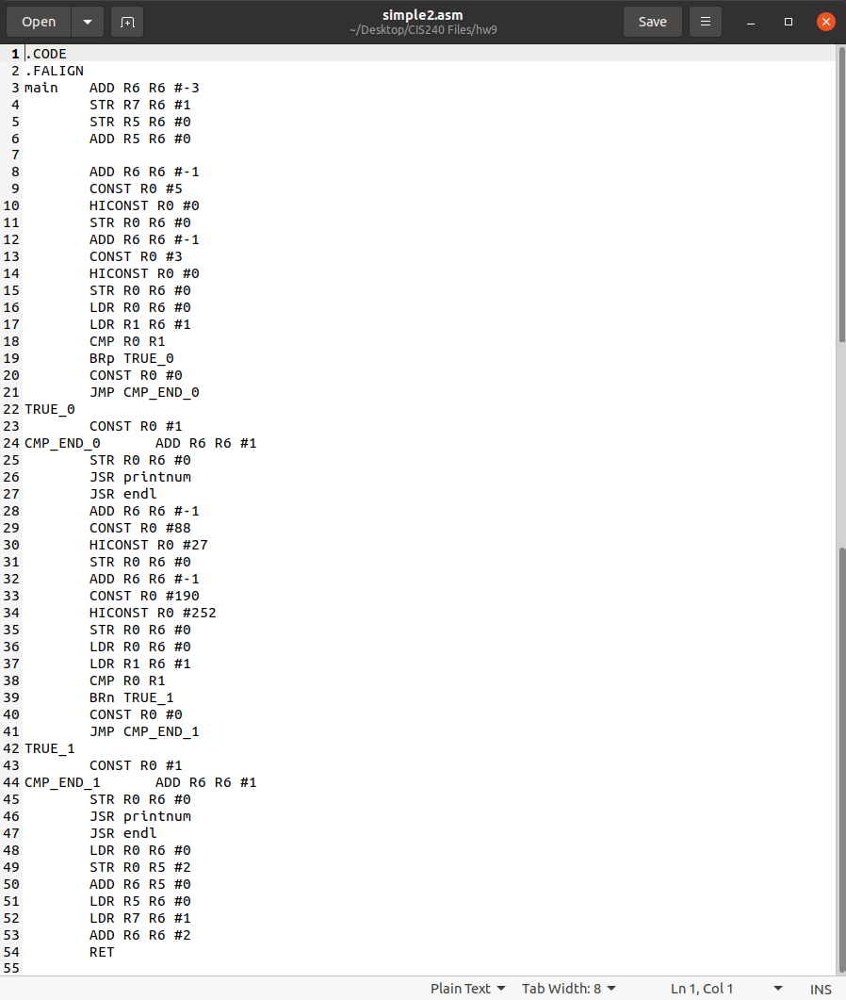

 ➔ 
C
In this project for CIS240, we were given the task of creating a compiler for a "new" stack-based language J. The compiler is executed through the command line where it takes in a J file and outputs an asm file.
See code here
In this project for CIS240, we were given the task of creating a compiler for a "new" stack-based language J. The compiler is executed through the command line where it takes in a J file and outputs an asm file.